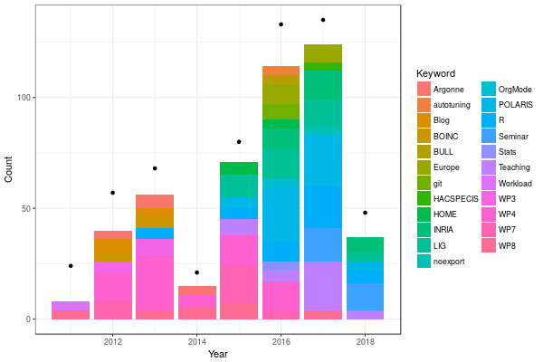
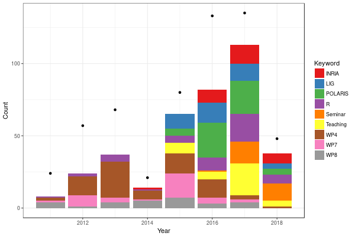
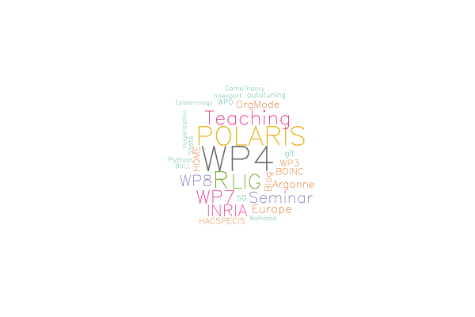

Analyse des mots-clés de mon journal
Table des matières
J'ai la chance de ne pas avoir de comptes à rendre trop précis sur le temps que je passe à faire telle ou telle chose. Ça tombe bien car je n'aime pas vraiment suivre précisément et quotidiennement le temps que je passe à faire telle ou telle chose. Par contre, comme vous avez pu le voir dans une des vidéos de ce module, je note beaucoup d'informations dans mon journal et j'étiquette (quand j'y pense) ces informations. Je me suis dit qu'il pourrait être intéressant de voir si l'évolution de l'utilisation de ces étiquettes révélait quelque chose sur mes centres d'intérêts professionnels. Je ne compte pas en déduire grand chose de significatif sur le plan statistique vu que je sais que ma rigueur dans l'utilisation de ces étiquettes et leur sémantique a évolué au fil des années mais bon, on va bien voir ce qu'on y trouve.
1 Mise en forme des données
Mon journal est stocké dans /home/alegrand/org/journal.org. Les
entrées de niveau 1 (une étoile) indiquent l'année, celles de niveau 2
(2 étoiles) le mois, celles de niveau 3 (3 étoiles) la date du jour et
enfin, celles de profondeur plus importantes ce sur quoi j'ai
travaillé ce jour là. Ce sont généralement celles-ci qui sont
étiquetées avec des mots-clés entre ":" à la fin de la ligne.
Je vais donc chercher à extraire les lignes comportant trois * en
début de ligne et celles commençant par une * et terminant par des
mots-clés (des : suivis éventuellement d'un espace). L'expression
régulière n'est pas forcément parfaite mais ça me donne une première
idée de ce que j'aurai besoin de faire en terme de remise en forme.
grep -e '^\*\*\* ' -e '^\*.*:.*: *$' ~/org/journal.org | tail -n 20
*** 2018-06-01 vendredi **** CP Inria du 01/06/18 :POLARIS:INRIA: *** 2018-06-04 lundi *** 2018-06-07 jeudi **** The Cognitive Packet Network - Reinforcement based Network Routing with Random Neural Networks (Erol Gelenbe) :Seminar: *** 2018-06-08 vendredi **** The credibility revolution in psychological science: the view from an editor's desk (Simine Vazire, UC DAVIS) :Seminar: *** 2018-06-11 lundi **** LIG leaders du 11 juin 2018 :POLARIS:LIG: *** 2018-06-12 mardi **** geom_ribbon with discrete x scale :R: *** 2018-06-13 mercredi *** 2018-06-14 jeudi *** 2018-06-20 mercredi *** 2018-06-21 jeudi *** 2018-06-22 vendredi **** Discussion Nicolas Benoit (TGCC, Bruyère) :SG:WP4: *** 2018-06-25 lundi *** 2018-06-26 mardi **** Point budget/contrats POLARIS :POLARIS:INRIA:
OK, je suis sur la bonne voie. Je vois qu'il y a pas mal d'entrées sans annotation. Tant pis. Il y a aussi souvent plusieurs mots-clés pour une même date et pour pouvoir bien rajouter la date du jour en face de chaque mot-clé, je vais essayer un vrai langage plutôt que d'essayer de faire ça à coup de commandes shell. Je suis de l'ancienne génération donc j'ai plus l'habitude de Perl que de Python pour ce genre de choses. Curieusement, ça s'écrit bien plus facilement (ça m'a pris 5 minutes) que ça ne se relit… ☺
open INPUT, "/home/alegrand/org/journal.org" or die $_; open OUTPUT, "> ./org_keywords.csv" or die; $date=""; print OUTPUT "Date,Keyword\n"; %skip = my %params = map { $_ => 1 } ("", "ATTACH", "Alvin", "Fred", "Mt", "Henri", "HenriRaf"); while(defined($line=<INPUT>)) { chomp($line); if($line =~ '^\*\*\* (20[\d\-]*)') { $date=$1; } if($line =~ '^\*.*(:\w*:)\s*$') { @kw=split(/:/,$1); if($date eq "") { next;} foreach $k (@kw) { if(exists($skip{$k})) { next;} print OUTPUT "$date,$k\n"; } } }
Vérifions à quoi ressemble le résultat :
head org_keywords.csv echo "..." tail org_keywords.csv
Date,Keyword 2011-02-08,R 2011-02-08,Blog 2011-02-08,WP8 2011-02-08,WP8 2011-02-08,WP8 2011-02-17,WP0 2011-02-23,WP0 2011-04-05,Workload 2011-05-17,Workload ... 2018-05-17,POLARIS 2018-05-30,INRIA 2018-05-31,LIG 2018-06-01,INRIA 2018-06-07,Seminar 2018-06-08,Seminar 2018-06-11,LIG 2018-06-12,R 2018-06-22,WP4 2018-06-26,INRIA
C'est parfait !
2 Statistiques de base
Je suis bien plus à l'aise avec R qu'avec Python. J'utiliserai les package du tidyverse dès que le besoin s'en fera sentir. Commençons par lire ces données :
library(lubridate) # à installer via install.package("tidyverse") library(dplyr) df=read.csv("./org_keywords.csv",header=T) df$Year=year(date(df$Date))
Attachement du package : ‘lubridate’
The following object is masked from ‘package:base’:
date
Attachement du package : ‘dplyr’
The following objects are masked from ‘package:lubridate’:
intersect, setdiff, union
The following objects are masked from ‘package:stats’:
filter, lag
The following objects are masked from ‘package:base’:
intersect, setdiff, setequal, union
Alors, à quoi ressemblent ces données :
str(df) summary(df)
'data.frame': 566 obs. of 3 variables:
$ Date : Factor w/ 420 levels "2011-02-08","2011-02-17",..: 1 1 1 1 1 2 3 4 5 6 ...
$ Keyword: Factor w/ 36 levels "Argonne","autotuning",..: 22 3 36 36 36 30 30 29 29 36 ...
$ Year : num 2011 2011 2011 2011 2011 ...
Date Keyword Year
2011-02-08: 5 WP4 : 77 Min. :2011
2016-01-06: 5 POLARIS : 56 1st Qu.:2013
2016-03-29: 5 R : 48 Median :2016
2017-12-11: 5 LIG : 40 Mean :2015
2017-12-12: 5 Teaching: 38 3rd Qu.:2017
2016-01-26: 4 WP7 : 36 Max. :2018
(Other) :537 (Other) :271
Les types ont l'air corrects, 568 entrées, tout va bien.
df %>% group_by(Keyword, Year) %>% summarize(Count=n()) %>% ungroup() %>% arrange(Keyword,Year) -> df_summarized df_summarized
# A tibble: 120 x 3 Keyword Year Count <fct> <dbl> <int> 1 Argonne 2012 4 2 Argonne 2013 6 3 Argonne 2014 4 4 Argonne 2015 1 5 autotuning 2012 2 6 autotuning 2014 1 7 autotuning 2016 4 8 Blog 2011 2 9 Blog 2012 6 10 Blog 2013 4 # ... with 110 more rows
Commençons par compter combien d'annotations je fais par an.
df_summarized_total_year = df_summarized %>% group_by(Year) %>% summarize(Cout=sum(Count)) df_summarized_total_year
# A tibble: 8 x 2 Year Cout <dbl> <int> 1 2011 24 2 2012 57 3 2013 68 4 2014 21 5 2015 80 6 2016 133 7 2017 135 8 2018 48
Ah, visiblement, je m'améliore au fil du temps et en 2014, j'ai oublié de le faire régulièrement.
L'annotation étant libre, certains mots-clés sont peut-être très peu présents. Regardons ça.
df_summarized %>% group_by(Keyword) %>% summarize(Count=sum(Count)) %>% arrange(Count) %>% as.data.frame()
Keyword Count
1 Gradient 1
2 LaTeX 1
3 Orange 1
4 PF 1
5 twitter 2
6 WP1 2
7 WP6 2
8 Epistemology 3
9 BULL 4
10 Vulgarization 4
11 Workload 4
12 GameTheory 5
13 noexport 5
14 autotuning 7
15 Python 7
16 Stats 7
17 WP0 7
18 SG 8
19 git 9
20 HACSPECIS 10
21 Blog 12
22 BOINC 12
23 HOME 12
24 WP3 12
25 OrgMode 14
26 Argonne 15
27 Europe 18
28 Seminar 28
29 WP8 28
30 INRIA 30
31 WP7 36
32 Teaching 38
33 LIG 40
34 R 48
35 POLARIS 56
36 WP4 77
OK, par la suite, je me restraindrai probablement à ceux qui apparaissent au moins trois fois.
3 Représentations graphiques
Pour bien faire, il faudrait que je mette une sémantique et une hiérarchie sur ces mots-clés mais je manque de temps là. Comme j'enlève les mots-clés peu fréquents, je vais quand même aussi rajouter le nombre total de mots-clés pour avoir une idée de ce que j'ai perdu. Tentons une première représentation graphique :
library(ggplot2) df_summarized %>% filter(Count > 3) %>% ggplot(aes(x=Year, y=Count)) + geom_bar(aes(fill=Keyword),stat="identity") + geom_point(data=df_summarized %>% group_by(Year) %>% summarize(Count=sum(Count))) + theme_bw()

Aouch. C'est illisible avec une telle palette de couleurs mais vu qu'il y a beaucoup de valeurs différentes, difficile d'utiliser une palette plus discriminante. Je vais quand même essayer rapidement histoire de dire… Pour ça, j'utiliserai une palette de couleur ("Set1") où les couleurs sont toutes bien différentes mais elle n'a que 9 couleurs. Je vais donc commencer par sélectionner les 9 mots-clés les plus fréquents.
library(ggplot2) frequent_keywords = df_summarized %>% group_by(Keyword) %>% summarize(Count=sum(Count)) %>% arrange(Count) %>% as.data.frame() %>% tail(n=9) df_summarized %>% filter(Keyword %in% frequent_keywords$Keyword) %>% ggplot(aes(x=Year, y=Count)) + geom_bar(aes(fill=Keyword),stat="identity") + geom_point(data=df_summarized %>% group_by(Year) %>% summarize(Count=sum(Count))) + theme_bw() + scale_fill_brewer(palette="Set1")

OK. Visiblement, la part liée à l'administration (Inria, LIG, POLARIS)
et à l'enseignement (Teaching) augmente. L'augmentation des parties
sur R est à mes yeux signe d'une amélioration de ma maîtrise de
l'outil. L'augmentation de la partie Seminar ne signifie pas grand
chose car ce n'est que récemment que j'ai commencé à étiqueter
systématiquement les notes que je prenais quand j'assiste à un
exposé. Les étiquettes sur WP ont trait à la terminologie d'un ancien
projet ANR que j'ai continué à utiliser (WP4 = prédiction de
performance HPC, WP7 = analyse et visualisation, WP8 = plans
d'expérience et moteurs d'expérimentation…). Le fait que WP4
diminue est plutôt le fait que les informations à ce sujet sont
maintenant plutôt les journaux de mes doctorants qui réalisent
vraiment les choses que je ne fais que superviser.
Bon, une analyse de ce genre ne serait pas digne de ce nom sans un wordcloud (souvent illisible, mais tellement sexy! ☺). Pour ça, je m'inspire librement de ce post : http://onertipaday.blogspot.com/2011/07/word-cloud-in-r.html
library(wordcloud) # à installer via install.package("wordcloud") library(RColorBrewer) pal2 <- brewer.pal(8,"Dark2") df_summarized %>% group_by(Keyword) %>% summarize(Count=sum(Count)) -> df_summarized_keyword wordcloud(df_summarized_keyword$Keyword, df_summarized_keyword$Count, random.order=FALSE, rot.per=.15, colors=pal2, vfont=c("sans serif","plain"))

Bon… voilà, c'est "joli" mais sans grand intérêt, tout particulièrement quand il y a si peu de mots différents.